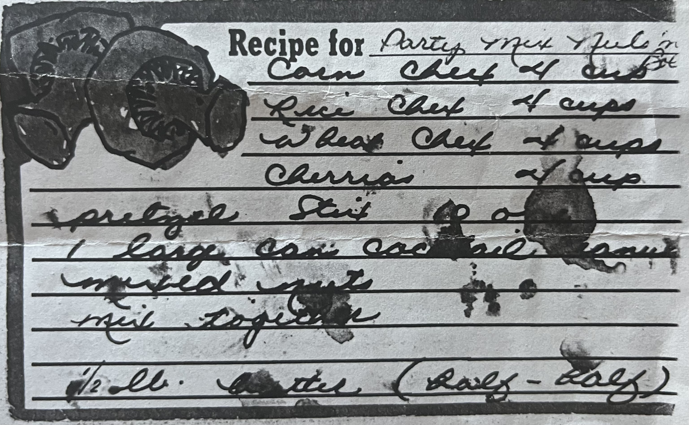
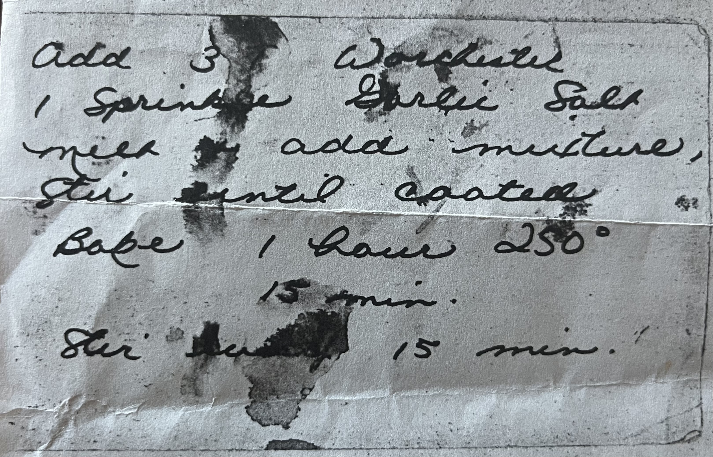

Homemade Chex Mix

This delicious snack, famously made by my grandmother, features pretzels, a variety of chex's, and peanuts, perfect for snacking anytime!
 
This is a copy of my grandmother's original recipe for the chex mix!
- 4 cups corn chex
- 4 cups rice chex
- 4 cups wheat chex
- 4 cups cheerios
- 4 cups pretzel sticks
- large can of cocktail peanuts
- 1/2 lb butter
- 3 tablespoons of worcestershire
- garlic salt
- Melt butter with worcestershire and garlic.
- Stir in the rest of the ingredients till fully coated.
- Bake for 1 hour at 250 degrees, stiring every 15 minutes.